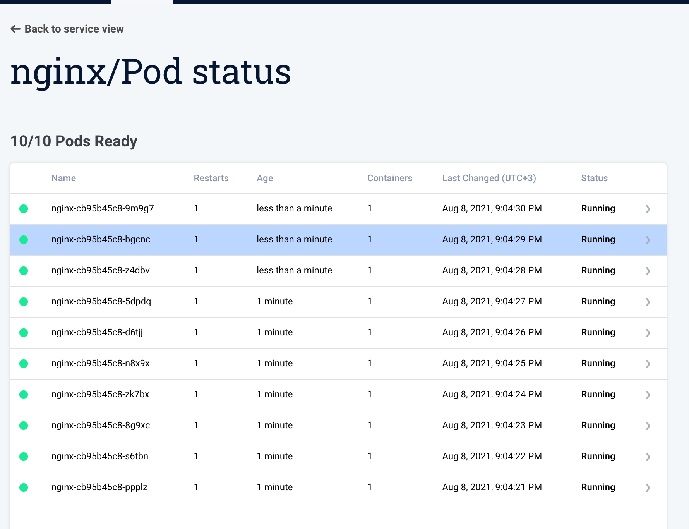

Interaction with the Cluster¶
Interaction with the cluster allows you to speed up the troubleshooting process. This is done by asking Komodor's agent to perform actions in the cluster.
Prerequisites¶
Install Komodor's watcher (version >=0.1.44) --set watcher.enableAgentTaskExecution=true to start the agent with the feature turned on (required for Describe Action)
Extra Permissions Required¶
In order to get logs from the cluster please use --set watcher.allowReadingPodLogs=true to update the RBAC manifests with the required permissions (required for Pod Log Action)
You can turn any of these flags off at any time to disable the features
Upgrade¶
helm repo update
helm upgrade --install k8s-watcher komodorio/k8s-watcher --set watcher.enableAgentTaskExecution=true --set watcher.allowReadingPodLogs=true --reuse-values
Live Pods¶
In the service, click on the Pod Status and Logs button.

The table shows all the pods that belong to the service based on the pod owner controller. 
Actions¶
Pod Logs¶
Request logs from one of the pods will stream back the last 100 logs from the pod.

When a pod was previously restarted by Kubernetes you can see the logs just before the pod was restarted.
Pod Description¶
Request returns the same output as kubectl describe pod [NAME]